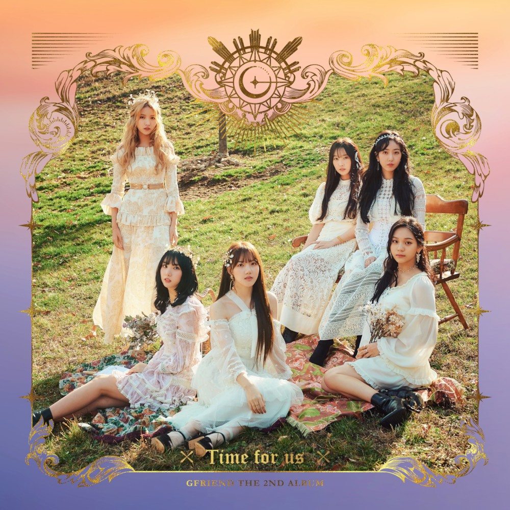

- Time for us(여자친구의 신곡 타이들 해야)
- 여자친구
- 여자친구 앨범
- 음악방송 우승기록
Time for us
여자친구의 정규 2집으로 LOL 이후 2년 6개월만에 발매되는 정규앨범이다.
발매일은 2019년 1월 14일로 여자친구는 이번 활동과 함께 데뷔 4주년을 맞게 되었다.

해야(Sunrise)
좋아하는 사람을 아직 떠오르지 않는 '해'에 비유해 더 깊어지고 있는 소녀의 마음을 표현했다. 전작 '밤'과 이어지는 서사를 자랑하며, 소녀의 복잡한 마음을 지루할틈 없는 구성과 쉴새없이 몰아치는 현란한 오케스트라 편곡으로 완성했다.